Integrantes
- Encarnación Hernández Raúl
- Guerrero Ramirez Luis Angel
- Hernandez Cruz Diego Alberto
- Vargas Balderas Bruno Valmiki
Algoritmo de K-means
Introduccion
El término "k-medias" fue utilizado por primera vez por James MacQueen en 1967, aunque la idea se remonta a Hugo Steinhaus en 1957. El algoritmo estándar fue propuesto por primera vez por Stuart Lloyd en 1957 como una técnica para modulación por impulsos codificados, aunque no se publicó fuera de los laboratorios Bell hasta 1982.
K-means es un algoritmo de clasificación no supervisada (clusterización) que agrupa objetos en k grupos basándose en sus características.
Clustering
El clustering es una tarea que tiene como finalidad principal lograr el agrupamiento de conjuntos de objetos no etiquetados, para lograr construir subconjuntos de datos conocidos como Clusters. Esta técnica no supervisada se basa en identificar grupos en los datos de tal manera que todos los datos del grupo (clúster) son datos con características similares mientras que los datos de los otros grupos son diferentes.
¿Que es?
K-Means (traducido como K-Medias) es un método de agrupamiento, que tiene como objetivo la partición de un conjunto de n observaciones en k grupos en el que cada observación pertenece al grupo cuyo valor medio es más cercano. Es un método utilizado en minería de datos. Para saber si los datos son parecidos o diferentes el algoritmo K-medias utiliza la distancia entre los datos. Las observaciones que se parecen tendrán una menor distancia entre ellas. En general, como medida se utiliza la distancia euclidiana, aunque también se pueden utilizar otras funciones.

Clasificación
La clasificación automática de objetos o datos es uno de los objetivos del aprendizaje de máquina. Podemos considerar tres tipos de algoritmos:
- Clasificación supervisada: disponemos de un conjunto de datos (por ejemplo, imágenes de letras escritas a mano) que vamos a llamar datos de entrenamiento y cada dato está asociado a una etiqueta (a qué letra corresponde cada imagen). Construímos un modelo en la fase de entrenamiento (training) utilizando dichas etiquetas, que nos dicen si una imagen está clasificada correcta o incorrectamente por el modelo.
- Clasificación no supervisada: los datos no tienen etiquetas (o no queremos utilizarlas) y estos se clasifican a partir de su estructura interna (propiedades, características).
- Clasificación semisupervisada: algunos datos de entrenamiento tienen etiquetas, pero no todos. Este último caso es muy típico en clasificación de imágenes, donde es habitual disponer de muchas imágenes mayormente no etiquetadas.
Funcionamiento
Los algoritmos de clustering son considerados de aprendizaje no supervisado. Este tipo de algoritmos de aprendizaje no supervisado busca patrones en los datos sin tener una predicción específica como objetivo (no hay variable dependiente).
K-means necesita como dato de entrada el número de grupos en los que vamos a segmentar la población. A partir de este número k de clusters, el algoritmo coloca primero k puntos aleatorios (centroides). Luego asigna a cualquiera de esos puntos todas las muestras con las distancias más pequeñas.
Pasos del funcionamiento
1.-Elección del número de clústers k El primer paso siempre es elegir en cuantas agrupaciones queremos segmentar los datos.
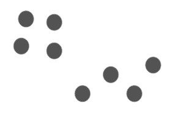2.-Inicializar las coordenadas de los centroides Los centroides se inicializan en coordenadas aleatorias. Suponiendo que tenemos k=2, iniciamos dos centroides, uno rojo y otro verde, en puntos aleatorios de los datos.
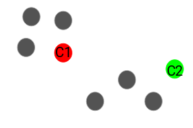3.-Asignamos cada punto a un clúster Se calcula la distancia de cada punto a cada centroide, y se agrupa con aquel centroide más próximo
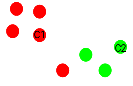4.-Se recalculan los centroides de los clústers Una vez tenemos todos los puntos asignados a un clúster, se recalculan los centroides de manera que vuelven a ser los centros de cada clúster.
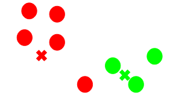Se repiten los pasos 3 y 4 hasta que se llega al criterio de parada.El proceso de asignar cada punto a un clúster y calcular los centros se repite hasta que se cumple el criterio de parada estipulado.
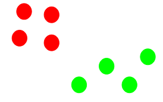Ejemplo
Este tipo de algotimo de aprendizaje no supervisado es útil para explorar, describir y resumir datos de una forma distinta. Utilizar este agrupamiento de datos nos puede servir para confirmar (o rechazar) algún tipo de clasificación previa.
Por ejemplo, podemos aplicar K-means en:
*Segmentación de clientes.
*Agrupación de textos que hablan de temas similares.
*Geoestadística.
*Comunidades de redes sociales.
Ejemplo en Phyton
Se obtienen los datos del documento
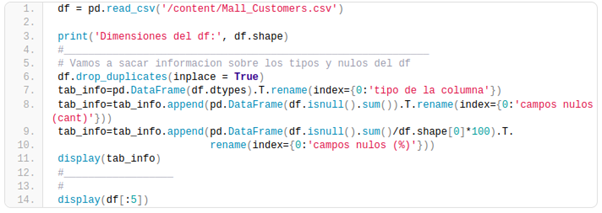 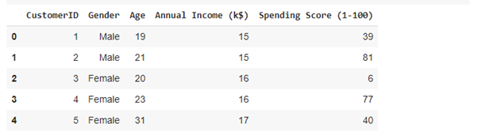Distribuciones de los datos
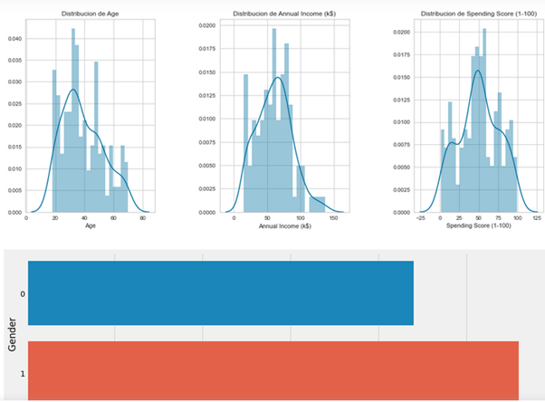Numero de clusters
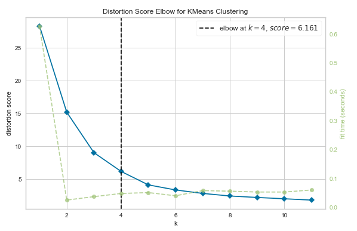Resultados sin agrupar
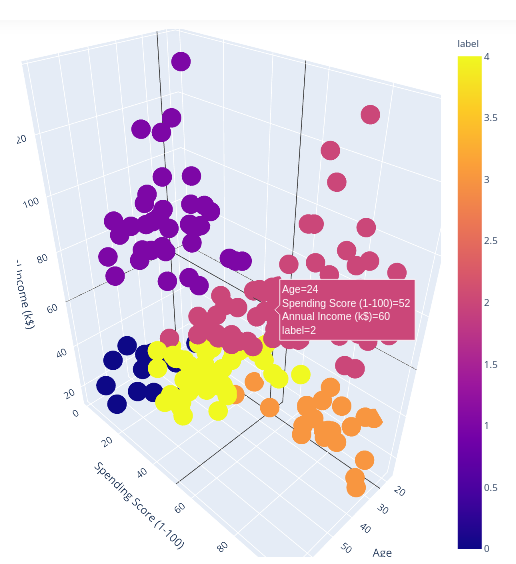Resultados agrupados
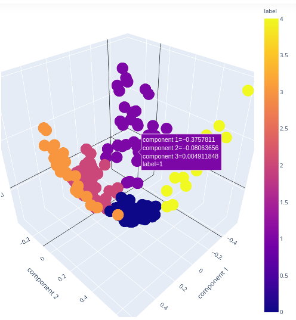Referencias
- Sanz, F. (2021, 14 mayo). ✅ Algoritmo K-Means | Clustering de forma sencilla. The Machine Learners. Recuperado 8 de mayo de 2022, de https://www.themachinelearners.com/k-means/
- O. (2020, 7 septiembre). ¿Qué es el Clustering? GraphEverywhere. Recuperado 8 de mayo de 2022, de https://www.grapheverywhere.com/que-es-el-clustering/